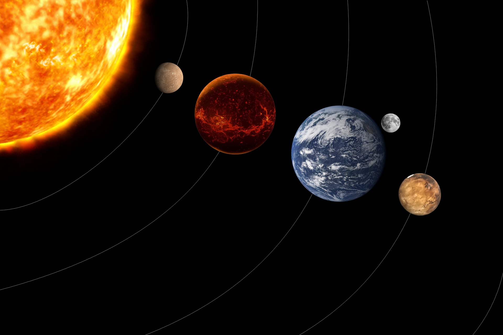

Ma naissance fut un véritable miracle, du moins c’est ce que Maman semble croire. Elle m’aime profondément, moi, sa fille aux multiples noms. Au travers tous ses sourires, elle me le fait savoir. Elle trouve formidable que moi, comme ses autres enfants, avons été créés à partir de rien. Elle est le seul être de tout l’univers à encore me porter attention. Je suis triste, car je sais qu’elle gardera espoir jusqu’à la toute fin. Cependant, je ne m’en sortirai probablement pas. À ce point, il ne me reste plus aucune chance de rémission. Malgré ma jeunesse, la mort, sur moi, s’abattra.
Jour après jour, année après année, elle reste à mon chevet, sa chaleur m’enveloppant dans une étreinte rassurante. Le poids de la maladie m’affaiblit; il y a déjà longtemps que je suis tourmentée. Je dois admettre que ma santé et ma vie d’autrefois me manquent. J’ai l’impression que le monde vacille autour de moi, je ne me sens pas bien du tout. Mes plaintes silencieuses résonnent toutes les nuits, étouffées par l’obscurité. Le regard dans le vide, je sens couler des larmes silencieuses sur mes joues. Alors que je me retourne sur le côté, une atroce douleur me vrille l’estomac. Ma peau est meurtrie, mon corps desséché. Je ne veux pas abandonner, mais il m’est difficile de rester forte après toutes ces années de combat.
Autrefois, tout le monde m’aimait, m’admirait, me vénérait, mais ces temps ont changé. Maman nous avait donné, à moi et à mes sœurs, chacune une tâche différente. La mienne était de m’occuper de ces petits êtres, de les nourrir et de les protéger. Je ne voulais pas décevoir ma tutrice, j’ai donc consacré toute mon enfance, jusqu’à ce jour, à ce qu’ils ne manquent de rien. C’était du travail, j’en consens, mais cette activité me tenait occupée et m’emplissait d’une fierté grandissante. J’étais heureuse de voir ces fugaces créatures naître, grandir et vivre leur vie dans l’attente perpétuelle de meilleurs lendemains. Aujourd’hui, je regrette un peu d’avoir accompli cette besogne aussi sérieusement. Je leur ai tout donné, mon temps, mon existence; j’ai été bien négligente. Je suis soudainement prise de remords, Maman m’avait bien dit de ne pas laisser trop de liberté à ces êtres imperceptiblement intelligents.
Je n’ai plus la force de bouger ni de me battre. Parfois, lorsqu'en de rares occasions j’arrive à ouvrir les yeux, je contemple admirativement les étoiles. J’ai toujours été passionnée par les constellations et les astres. C’est grâce aux histoires que Maman me racontait lorsque j’étais plus jeune sur les astronautes s’aventurant dans l’espace, la conquête de nouvelles planètes et les autres formes de vies de l’univers que j’ai développé un si grand intérêt pour l’astrologie. Perdue dans mes pensées, j’oublie momentanément la douleur qui m’assaille, le mal qui me ronge de l’intérieur, cette souffrance abominable. Aujourd’hui, je n’ai plus le moindre allié autre que ma chaleureuse mère, qui me réchauffe quand j’ai froid et qui reste à mes côtés en cette période difficile, sans discrédit. Un sourire mélancolique apparaît sur mes lèvres gercées en pensant à tous mes anciens compères qui, éparpillés aux quatre coins de la planète, ont inventé toutes sortes de noms pour me désigner. J’accorde aussi une pensée à toutes ces petites créatures qui, je le crains, ne survivront pas bien longtemps une fois leur gardienne partie, et cette idée m’accable. Lorsque je referme les yeux, les étoiles disparaissent, et l’obscurité revient me hanter.
Mon corps se retourne contre moi. Mon sang, brûlant et souillé, circule péniblement sous ma peau empoisonnée. Mon corps ne produit plus l’essentiel, je commence à halluciner, et rien ne peut cacher mon désarroi. Les substances indispensables à ma survie se volatilisent peu à peu. Mes nutriments sont détruits, ma masse en carbone, envolée. Les nuisances m’ont attaquée de l’intérieur, sordides petits êtres vicieux. Comme un virus, ils ont infiltré ma chair. Ils se sont promenés sur mon derme, agrippés à moi sans jamais me lâcher. Je me sens plus chétive, de plus en plus pathétique, ma déperdition s’accélère.
Maman dit que ces bactéries sont en moi depuis longtemps. Nocives, calculatrices et sans pitié. Il m’est difficile de comprendre comment ces choses vivantes peuvent s’en prendre aussi gratuitement à une innocente enfant. Oui, tout ce temps, je ne les avais guère remarquées, mais elles étaient bien présentes. Maman croit que si je m’étais aperçu plus tôt du mal qu’elles me font, mon organisme aurait peut-être pu les exterminer. Nous sanglotons désormais toutes les deux, car ma fin est imminente. Les cruelles petites choses ont déjà fait trop de dégâts; il n’y a plus aucun traitement possible. J’ai déjà tenté, en vain, de m’en débarrasser. La douleur, les nausées, l’étourdissement que je perçois en permanence et cette inétanchable soif, c’est tout simplement horrible.
Je vois ma chère mère, sans surprise, à mon chevet. Elle semble plus fatiguée que les autres jours, elle me regarde de ses petits yeux, affligée. Elle n’a vraisemblablement plus la même confiance, la même assurance qu’auparavant, mais je suis confortée de l’avoir si près. Nous restons dans le silence confortable que nous connaissons bien. J’aurais aimé l’entendre chanter une toute dernière fois avant le jour fatidique, mais je n’ose pas perturber ce moment de calme enchanté. Je repense à mon enfance, à toutes ces belles années inoubliables. Mon rêve, plus jeune, était de voyager à travers l’univers, comme le ferait un cosmonaute. Ma famille et moi n’avons jamais bougé, cependant j’aurais certainement adoré voyager. Malheureusement, rien n’est plus réalisable pour moi, maintenant que ces vermines m’ont prise comme hôte.
Bien sûr, on parle de rêve, l’incongrue utopie d’une jeune fille mourante, mais la réalité est que j’aurais été très heureuse de simplement continuer à exécuter la tâche que Maman m'avait confiée. J’aurais volontiers passé le reste de mon existence à protéger ces jolies petites créatures. Si seulement j’avais eu plus de temps, car ma finitude, j’ai pris beaucoup trop longtemps à l’accepter. Roulée en boule dans mon coin, je passe des jours et des jours à me morfondre plutôt que de profiter du temps qu’il me reste. Je réfléchis à la vie que j’aurais pu avoir, à la bonne fortune que j’aurais pu offrir aux petits êtres sur lesquels je dois veiller, et je m’imagine encore cette grande aventure. Je suis tout de même heureuse de ma courte existence, même si elle n’a été qu’une série de malchances m’ayant menée à ce destin funeste. Oui, j’ai perdu trop de temps à m’apitoyer sur mon sort, c’est pourquoi ma mère voit en cet instant ce franc sourire éclairant mon visage. Elle me sourit alors en retour. Je suis si émue que j’en oublie mes blessures. J’ignore si c’est parce que la maladie a pris une autre importance ou parce que j’ai finalement accepté ma destinée, mais tout me semble soudainement moins sauvage.
Le monde commence à tourner plus lentement. Je souffre incontestablement de déshydratation. J’ai de la difficulté à respirer tellement l’air est encrassé et je prie pour que cesse mon long tourment. L’air est mauvais, mais ce ne peut être ce qui me cause une telle souffrance. Je suffoque, mes poumons ne fonctionnent plus, mes alvéoles sont détruits par millions. La proximité de maman, son amour inconditionnel qui m’enlace dans une vague de chaleur réconfortante, est la dernière chose que je perçois avant de perdre conscience. Après toutes ces années, je me vois finalement vaincue par ces imparables bactéries, ces détestables parasites. J’estime ne jamais avoir fait intentionnellement mal à qui que ce soit ni à quoi que ce soit, mais je me retrouve tout de même à implorer une abstraction invisible ou imaginaire, pour l’absolution. Maman hurle sa douleur, une rage et une tristesse intense brûlent dans ses yeux : c’était son cauchemar le plus grand, la perte de sa merveilleuse enfant, sa fille favorite.
Le feu qui brûle au sein de Maman est plus ardent que jamais. Je me demande si après mon décès, mes sœurs se souviendront de moi. Ce qui me chagrine le plus, c’est de savoir que toutes les innocentes petites créatures que je devais nourrir et protéger trépassent avec moi. De voir tout ce pour quoi on a toujours vécu partir en fumée subséquemment à sa mort, c’est une aberration. Je me demande un instant si les parasites qui occupaient mon corps savaient qu’en exploitant mon organisme de la sorte, ils creuseraient eux-mêmes leur tombe. S’ils s’étaient contentés de ce que je pouvais leur fournir comme l’avaient fait les gentils petits êtres dont j’ai si longtemps pris soin, personne n’aurait aujourd’hui à faire face à un tel émoi. Sur ma délicate peau, ils ont fait exploser d’effroyables bombes. À l’aide de haches et de scies, ils m’ont privée de poumons. Les dangereux parasites m’ont dépouillée sans gêne de tous les éléments que je gardais sur moi. Avec leurs nouvelles technologies, ces humains ont relâché dans mon atmosphère des tonnes de poisons. Je peux commencer mon voyage, je sais que Maman continuera de réchauffer la galaxie.
